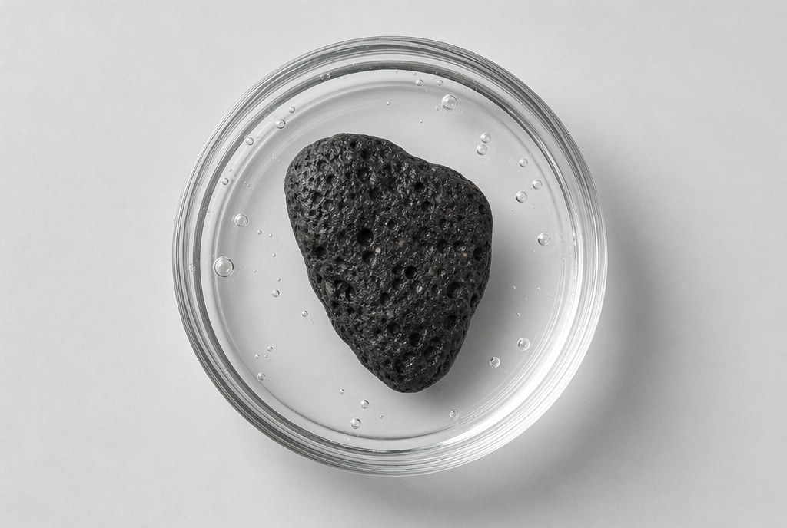
현무암을 지나온 물
미네랄을 머금은 제주 용암해수
Brand Story
Rest from Jeju Nature,
Let Your Skin Breathe Again
About LAVASOME
제주의 자연에서 시작한 아름다움이 피부를 넘어 더 좋은 가치로 이어지도록. 라바섬은 제품을 만드는 일과 함께 나누는 일을 이어갑니다.
작은 생명을 위한 따뜻한 나눔
생명과 자연을 존중하는 아름다움
함께 만드는 일자리와 지속가능한 나눔
Where Our Ingredients Begin
현무암을 지나온 바닷물, 척박한 땅에서 자란 식물, 섬에만 사는 생물종. 라바섬의 원료는 제주의 이런 자연에서 출발합니다.
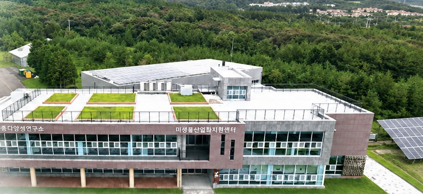

미네랄을 머금은 제주 용암해수
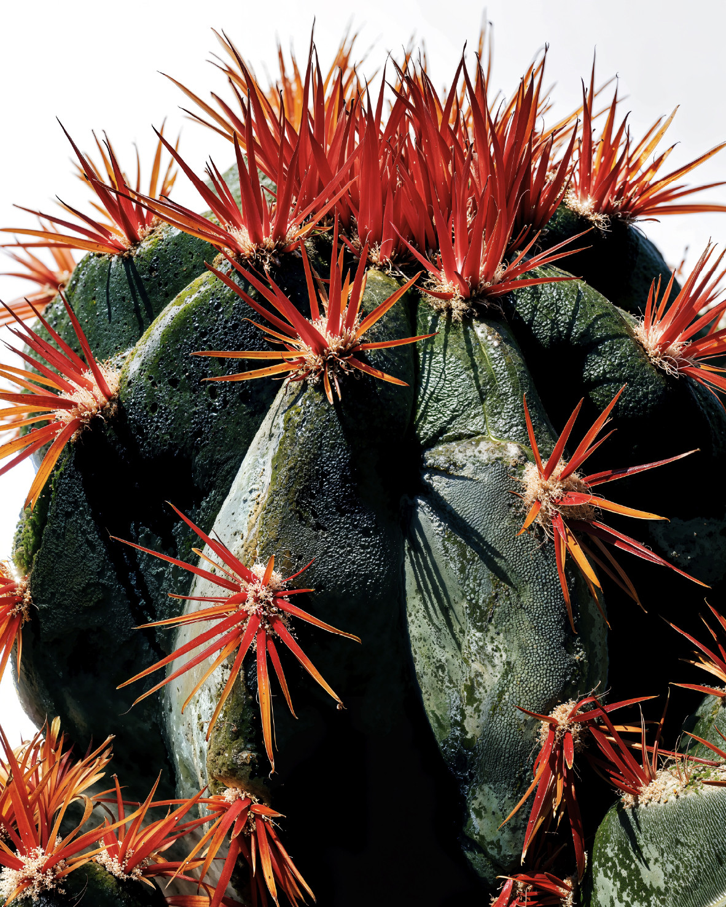
바닷바람을 견디는 제주 백년초
제주 생물종 다양성 연구소와 원료 연구
02 Ingredients
제주에서 온 원료와 검증된 기능 성분을 피부 고민에 맞춰 고릅니다.
한 가지 성분에 기대지 않고, 서로 보완하는 원료를 함께 고릅니다.

01
아스코빅애씨드
맑고 투명한 피부를 위한 안정화된 순수 비타민 C
13.5%고함량
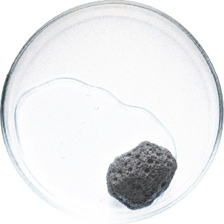
02
라바 씨워터
풍부한 미네랄이 피부 컨디션을 건강하게 유지하는 데 도움
미네랄제주 유래
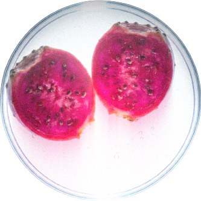
03
선인장추출물
수분을 지켜주고 건조한 환경에서도 피부를 편안하게 유지하는 다당체
제주 유래
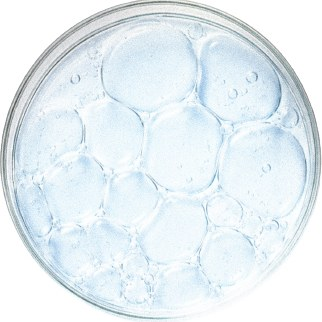
04
펩타이드
탄력 있는 피부를 위한 피부 컨디션 케어 성분
복합 성분

05
글루타치온
맑고 균일한 피부 톤을 위한 항산화 성분
고함량
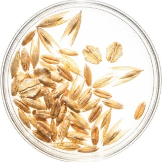
06
베타글루칸
피부 장벽을 강화하고 수분을 지켜주는 자연 유래 보습 성분
자연 유래
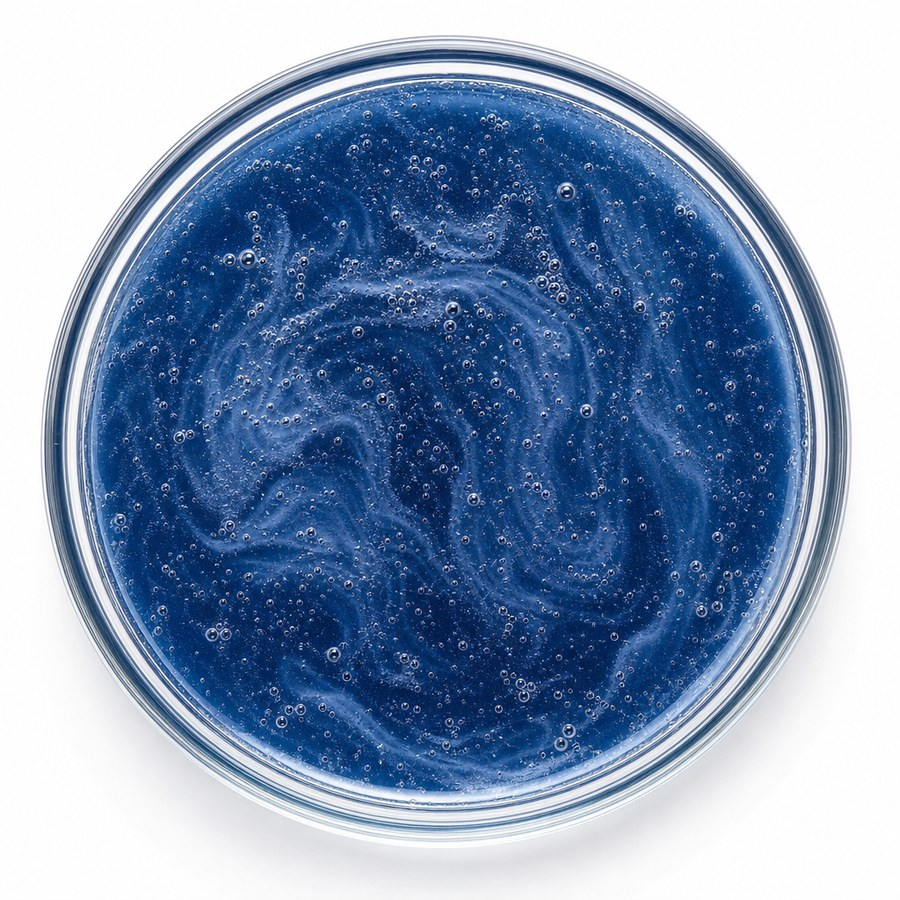
07
유산균발효성분
건강한 피부 마이크로바이옴 균형을 유지하고 피부 환경을 건강하게 케어
마이크로바이옴 케어
Scroll to open
좋은 원료를 선택하는 것에서 그치지 않습니다. 라바섬은 성분의 특성과 안정성, 피부와의 균형을 고려하여 제품을 개발합니다.
순수 비타민C 13.5%를 함유하여 칙칙한 피부톤과 피부 고민을 케어합니다.
산화에 취약한 순수 비타민C의 특성을 고려하여 2중 안정화 기술을 적용했습니다.
고함량 비타민C의 특성을 고려하여 성분의 안정성과 피부 사용감을 함께 연구했습니다.
인체적용시험을 통해 피부 밝기와 주름 개선, 피부 자극 여부를 평가했습니다.
순수 비타민C 13.5%를 담은 비타씨 플러스 앰플.
2중 안정화 기술을 적용하고, 인체적용시험을 통해 피부 밝기 및 주름 개선
효과와 피부 자극 여부를 평가한 제품입니다.
Three Principles of Good Skincare
새 제품을 만들 때마다 같은 세 가지 질문에서 출발합니다.
피부 고민에 맞춘 핵심 성분을 선택합니다.
성분이 안정적으로 작용할 수 있는 조건과 환경을 고려합니다.
기능과 피부 부담 사이의 균형을 고려합니다.
05 | The LAVASOME Journey
라바섬의 여정은 자연에 대한 믿음과 고객에 대한 진심으로 이어져 왔습니다.
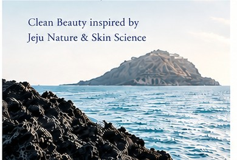
제주의 자연에서 영감을 받아 라바섬이 시작되었습니다.
비타C 앰플이 2024년과 2025년 서울어워드를 연이어 수상하며 브랜드 경쟁력을 인정받았습니다.
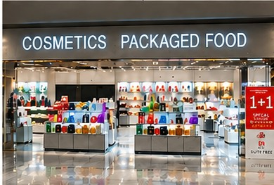
면세점 입점과 함께 해외 시장으로 확장하며 더 많은 고객과 만나고 있습니다.
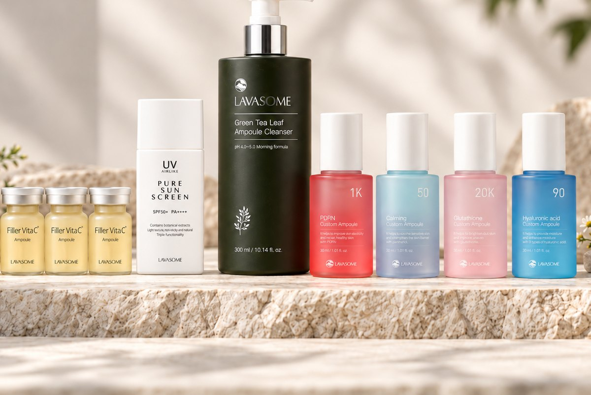
제주에서 시작한 피부 과학의 가치를 더 깊고, 더 넓게 이어갑니다.